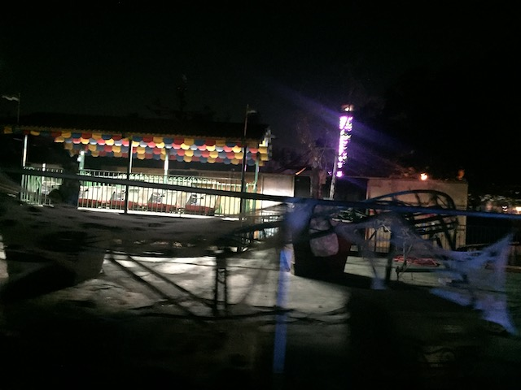
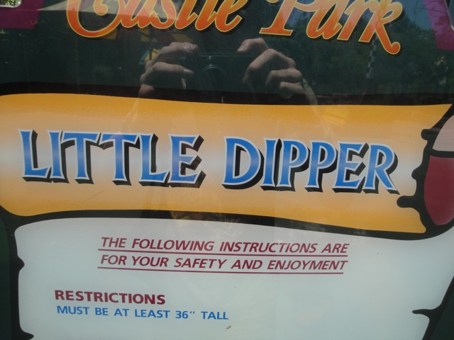

| |

Little Dipper Review

For today's review, we'll be reviewing Castle Park's kiddy kiddy coaster. No, not Merlin's Revenge. That's still around. The really small one. Little Dipper. If you were really whorish, you climbed in the car, the operator pulled down the lap bar, and you're off. You first start off by climbing the lift hill. Which is patheticly small. I mean, come on. The lift hill was about the same size as me. Then you go down the first drop. And suprisingly, it was faster than expected. But yeah. Its just four dips in a row and a turn before you go back through the station and then repeat over and over and over again. I had a lot of fun being an idiot on this ride, but yeah. Nothing of value was lost to anyone aside from hard core credit whores missing another number to their count.
1/10
Location: Castle Park
Opened: Unknown
Died: 2020
Built by: Miler Coasters
Last Ridden: July 9, 2011
Little Dipper Photos


Home
|